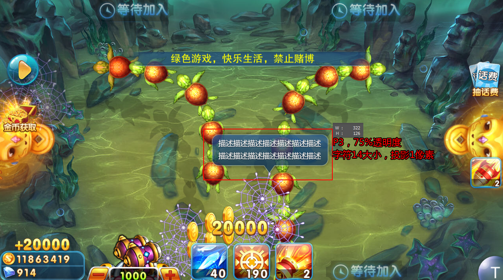
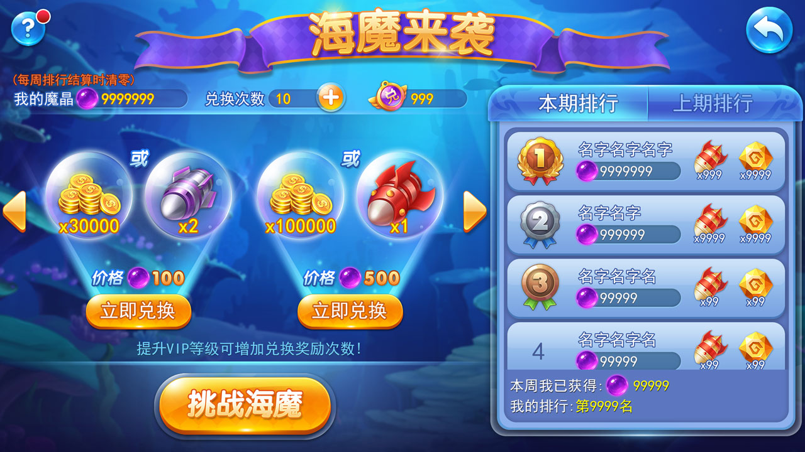
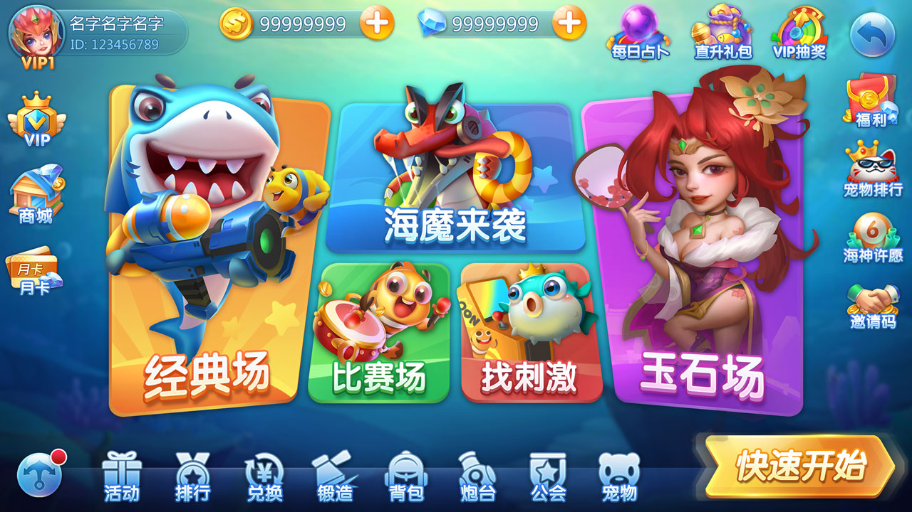
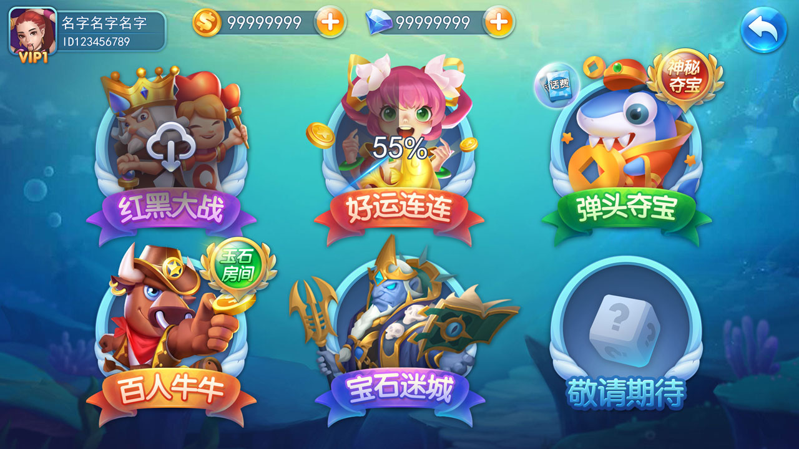
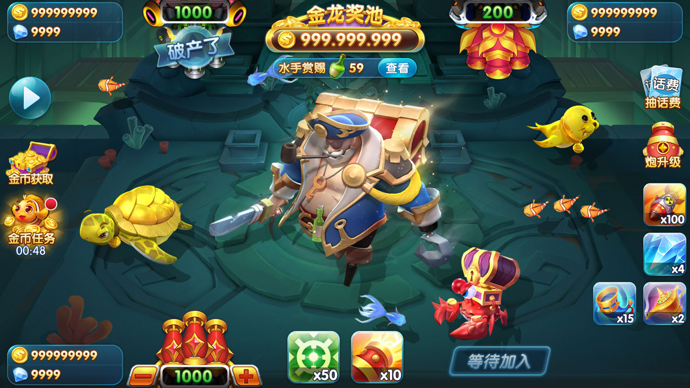
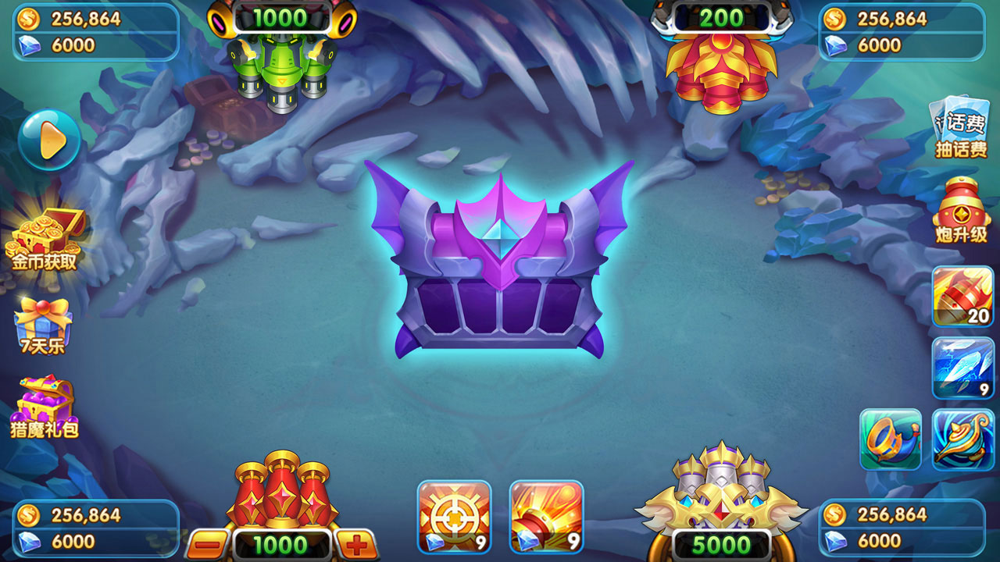
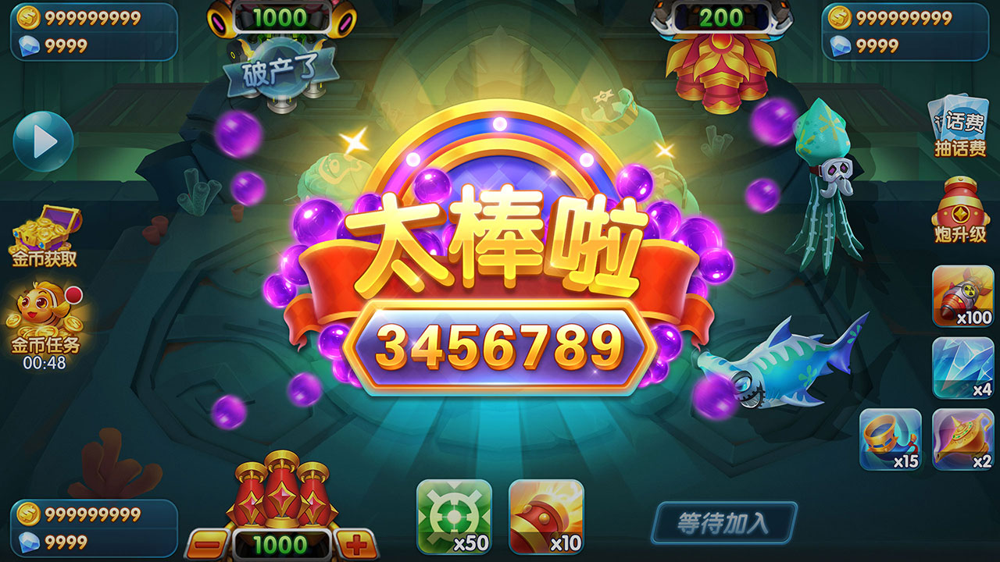
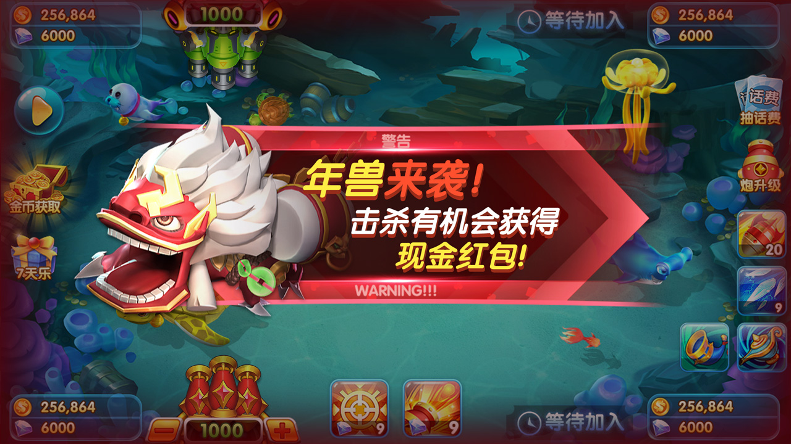

街機捕魚戰鬥
魚群、Boss、砲台升級、子彈與道具回饋等戰鬥介面。
FISH SHOOTING SOURCE + ART
面向捕魚源碼、捕魚遊戲與街機捕魚搜尋需求，展示倉庫中可核實的 Cocos2d-x Lua 客戶端模組、C/Android NDK 檔案、捕魚玩法與真實產品截圖。
捕魚源碼 · 捕魚遊戲 · 街機捕魚 · Cocos2d-x 捕魚源碼 · 捕魚美術資源
PRODUCT SCOPE
從真實程式碼目錄和截圖整理功能範圍，協助開發者判斷專案是否適合評估與二次開發。
魚群、Boss、砲台升級、子彈與道具回饋等戰鬥介面。
現有說明包含彈頭奪寶、玉石場、三國主題和寵物玩法等場景。
公開模組涵蓋登入、好友/聊天、設定、禮物兌換與協定定義。
11 張倉庫內截圖展示場景、HUD、魚群、砲台、獎勵與特效。
VISUAL EVIDENCE
圖片均來自目前 GitHub 倉庫的 `docs/assets/screenshots`，不是示意圖。










REPOSITORY EVIDENCE
| Cocos2d-x Lua 證據 | Lua UI 模組呼叫 `cc` API，並載入 CSB 介面檔案。 |
|---|---|
| 客戶端模組 | 登入、好友/聊天、設定、禮物兌換、資料和協定模組。 |
| Android 原生程式碼 | `Android.mk` 編譯 bspatch、bzip2 等相關 C 原始檔。 |
| 倉庫範圍 | 公開檔案與截圖用於技術評估；整合前應自行核對程式碼完整度、依賴和授權。 |
FAQ
本頁只說明公開倉庫中可見的 Lua、C、Android.mk、模組檔案和截圖。是否可直接建置，應按倉庫依賴和缺少資源實際驗證。
公開 Lua 檔案呼叫 `cc` API，並透過 CSB 檔案建立介面，這是倉庫內可檢索的技術證據。
倉庫包含 11 張產品場景截圖；README 也描述美術原圖與多種場景。實際資源範圍以倉庫檔案為準。